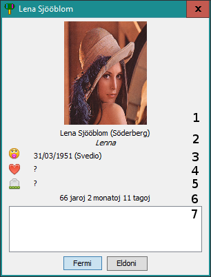

Detala vido
Vi povas vidi detalajn informojn por ĉiu karto duobla-klakante.

La zonoj estas detalitaj ĉi tiu:
- la selektita bildo;
-
la kompleta nomo de la persono sekvita de la uzanta nomo inter parentezoj kaj la
aliaj nomoj en kursiva;
- : la naskiĝodato kaj la naskiĝejo;
-
 : ĉio rilatoj de la persono. La rilatoj sekvas tiun formaton:
dato (ejo)[ - finodato], la finodato nur estas montrata se la rilato estas
finita (eksedziĝo, k.t.p.), la estas anstataŭiĝota por
: ĉio rilatoj de la persono. La rilatoj sekvas tiun formaton:
dato (ejo)[ - finodato], la finodato nur estas montrata se la rilato estas
finita (eksedziĝo, k.t.p.), la estas anstataŭiĝota por
 ;
;
 : la mortodato kaj la mortejo;
: la mortodato kaj la mortejo;-
la aĝo de la persono. Se la mortodato estas nekonata, la aĝo estas komputita el la nuna dato;
alie la mortodato anstataŭ estas uzita. Se la naskiĝodato estas nekonata, la aĝo ne aperigas
- la komenta zono
Sekva temo: Aldoni karto